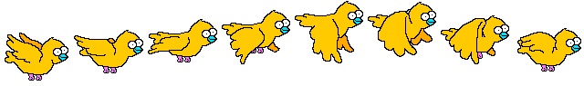
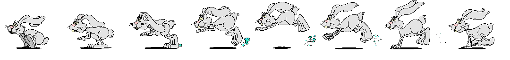
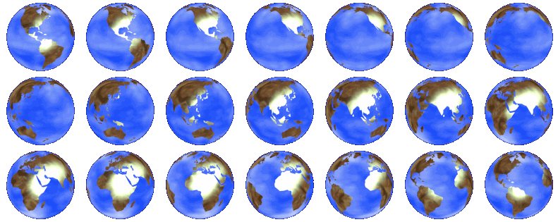
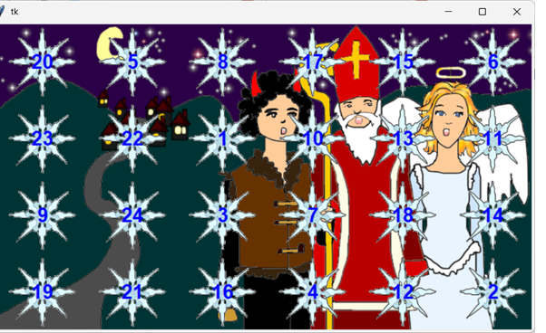
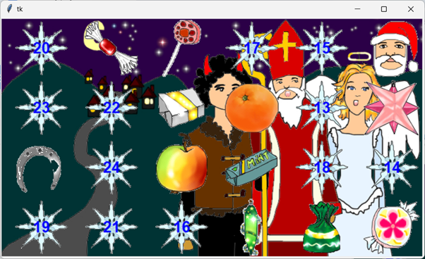

21. Animované obrázky¶
V priečinku obrázkov obrazky1.zip máme pripravené obrázky pre dnešnú prednášku, napríklad aj týchto 8 fáz animácií vtáčika v súbore 'vtak.png':
{kind=link}

Na 20. prednáške sme sa naučili takéto súbory rozstrihať do série obrázkov a potom sme to otestovali nejako takto:
import tkinter
from PIL import Image, ImageTk
def strihaj(meno_suboru, n):
obr = Image.open(meno_suboru)
sir, vys = obr.width // n, obr.height
return [ImageTk.PhotoImage(obr.crop((x, 0, x + sir, vys)))
for x in range(0, obr.width, sir)]
canvas = tkinter.Canvas()
canvas.pack()
zoz = strihaj('vtak.png', 8)
tk_id = canvas.create_image(200, 150)
faza = 0
while True:
canvas.itemconfig(tk_id, image=zoz[faza])
faza = (faza + 1) % len(zoz)
canvas.update()
canvas.after(100)
Použili sme tu funkciu strihaj(), ktorá je podobná funkcii z cvičení. V tejto verzii funkcia dostáva meno súboru, ktorý treba rozstrihať a vytvorí zoznam obrázkov ale už prekonvertované do formátu PhotoImage pre tkinter.
Animované objekty¶
Ak by sme chceli mať v ploche naraz tri animované obrázky, mohli by sme to zapísať takto:
import tkinter
from PIL import Image, ImageTk
def strihaj(meno_suboru, n):
obr = Image.open(meno_suboru)
sir, vys = obr.width // n, obr.height
return [ImageTk.PhotoImage(obr.crop((x, 0, x + sir, vys)))
for x in range(0, obr.width, sir)]
canvas = tkinter.Canvas()
canvas.pack()
zoz = strihaj('vtak.png', 8)
tk_id1 = canvas.create_image(200, 120)
tk_id2 = canvas.create_image(100, 80)
tk_id3 = canvas.create_image(300, 100)
faza = 0
while True:
canvas.itemconfig(tk_id1, image=zoz[faza])
canvas.itemconfig(tk_id2, image=zoz[faza])
canvas.itemconfig(tk_id3, image=zoz[faza])
faza = (faza + 1) % len(zoz)
canvas.update()
canvas.after(100)
Každý z týchto animovaných obrázkov používa ten istý zoznam obrázkov fáz animácie. Animovaný obrázok teraz zapuzdrime do triedy Anim:
import tkinter
from PIL import Image, ImageTk
class Anim:
def __init__(self, x, y, zoz):
self.id = canvas.create_image(x, y)
self.zoz = zoz
self.faza = 0
def dalsia_faza(self):
self.faza = (self.faza + 1) % len(self.zoz)
canvas.itemconfig(self.id, image=self.zoz[self.faza])
def strihaj(meno_suboru, n):
obr = Image.open(meno_suboru)
sir, vys = obr.width // n, obr.height
return [ImageTk.PhotoImage(obr.crop((x, 0, x + sir, vys)))
for x in range(0, obr.width, sir)]
canvas = tkinter.Canvas()
canvas.pack()
zoz = strihaj('vtak.png', 8)
a1 = Anim(200, 120, zoz)
a2 = Anim(100, 80, zoz)
a3 = Anim(300, 100, zoz)
while True:
a1.dalsia_faza()
a2.dalsia_faza()
a3.dalsia_faza()
canvas.update()
canvas.after(100)
Bude to fungovať aj vtedy, keď namiesto troch premenných a1, a2, a3, vyrobíme zoznam objektov, napríklad takto:
azoz = [Anim(200, 120, zoz),
Anim(100, 80, zoz),
Anim(300, 100, zoz),
Anim(150, 200, zoz)]
while True:
for a in azoz:
a.dalsia_faza()
canvas.update()
canvas.after(100)
Zrejme v takomto zozname by teraz mohol byť ľubovoľný počet takýchto objektov.
Udalosti¶
Namiesto while-cyklu, v ktorom sa hýbu všetky animované objekty, to môžeme prepísať pomocou časovača:
def timer():
for a in azoz:
a.dalsia_faza()
canvas.after(100, timer)
timer()
Teraz by fungovalo aj pridávanie nových objektov počas animovania tých existujúcich. Môžeme v konzole zapísať aj počas behu animácie, napríklad:
>>> azoz.append(Anim(280, 200, zoz))
Vďaka tomuto mechanizmu môžeme potupne pridávať nové a nové objekty a tie sa okamžite začnú animovať.
Teraz zoznam vyprázdnime a nové animované objekty budeme pridávať pri každom kliknutí myšou:
def timer():
for a in azoz:
a.dalsia_faza()
canvas.after(100, timer)
def klik(event):
azoz.append(Anim(event.x, event.y, zoz))
canvas = tkinter.Canvas()
canvas.pack()
zoz = strihaj('vtak.png', 8)
azoz = []
timer()
canvas.bind('<ButtonPress>', klik)
Takto môžeme vytvoriť ľubovoľný počet animovaných objektov.
Trieda animovaná Plocha¶
Grafickú aplikáciu spolu s canvasom a udalosťami zapuzdrime do triedy Plocha:
import tkinter
from PIL import Image, ImageTk
class Plocha:
def __init__(self):
self.canvas = Anim.canvas = tkinter.Canvas()
self.canvas.pack()
self.zoz = strihaj('vtak.png', 8)
self.azoz = []
self.timer()
self.canvas.bind('<ButtonPress>', self.klik)
def timer(self):
for a in self.azoz:
a.dalsia_faza()
self.canvas.after(100, self.timer)
def klik(self, event):
self.azoz.append(Anim(event.x, event.y, self.zoz))
class Anim:
canvas = None
def __init__(self, x, y, zoz):
self.id = self.canvas.create_image(x, y)
self.zoz = zoz
self.faza = 0
def dalsia_faza(self):
self.faza = (self.faza + 1) % len(self.zoz)
self.canvas.itemconfig(self.id, image=self.zoz[self.faza])
def strihaj(meno_suboru, n):
obr = Image.open(meno_suboru)
sir, vys = obr.width // n, obr.height
return [ImageTk.PhotoImage(obr.crop((x, 0, x + sir, vys)))
for x in range(0, obr.width, sir)]
Plocha()
Keďže canvas už nebude globálna premenná, ale je to teraz atribút triedy Plocha, priradíme ho aj do triedneho atribútu canvas triedy Anim. Teraz sa takto k nemu dostanú aj inštancie triedy Anim.
Obrázok v pozadí grafickej plochy¶
Našou najbližšou úlohou bude vložiť daný obrázok ako pozadie grafickej plochy. Zatiaľ sme to robili nejako takto:
zistili sme si veľkosť obrázka (napríklad obrázok v súbore
'les.png'je veľký1280x817pixelov)pri vytváraní
canvassme toto nastavili ako veľkosť a ako prvé sme potom do plochy vložili pomocoucreate_imagetento obrázok
sir, vys = 1280, 817
canvas = tkinter.Canvas(width=sir, height=vys)
canvas.pack()
pozadie = tkinter.PhotoImage(file='les.png')
canvas.create_image(sir/2, vys/2, image=pozadie)
Keďže create_image(x, y, image=obrázok) umiesňuje obrázok tak, že (x, y) je stred obrázka, museli sme najprv prepočítať tieto súradnice na stred grafickej plochy. Pre nás by bolo pohodlnejšie, keby sme mohli určiť, ako sa takýto obrázok umiestni, t.j. ako sa ukotví (podobne ako sme ukotvovali texty v create_text) v grafickej ploche. Na to slúži pomenovaný parameter anchor, v ktorom zadáme ukotvenie 'nw' (teda na sevorozápadný roh obrázka) a súradnice (0, 0). Zapíšeme to takto:
canvas.create_image(0, 0, image=pozadie, anchor='nw')
Radi by sme ale namiesto priradenia sir, vys = 1280, 817 pre konkrétny obrázok pozadia, použili:
pozadie = tkinter.PhotoImage(file='les.png')
sir, vys = pozadie.width(), pozadie.height()
canvas = tkinter.Canvas(width=sir, height=vys)
canvas.pack()
canvas.create_image(0, 0, image=pozadie, anchor='nw')
Teda, že najprv prečítame obrázok, zistíme si jeho rozmery a až potom vytvárame grafickú plochu.
Toto nám spôsobí takúto chybovú správu:
RuntimeError: Too early to create image``.
Python nám tu vysvetľuje, že volanie tkinter.PhotoImage(...) prišlo skôr, ako sme vytvorili samotnú grafickú aplikáciu (zrejme pomocou tkinter.Canvas(...)).
Našťastie takto zacyklený problém vieme vyriešiť:
volanie:
canvas = tkinter.Canvas()
ktoré vytvára grafickú aplikáciu je len skratkou týchto dvoch príkazov:
win = tkinter.Tk() canvas = tkinter.Canvas(win)
kde inštancia
winreprezentuje samotnú grafickú aplikáciu (okno, window) na začiatku ešte bez canvasu (často sa zvykne tejto inštancii dávať menoroot)až druhý príkaz
tkinter.Canvas(win)vytvorícanvasa umiestni ho do grafického oknawin(parameterwinzapisovať nemusíme, tkinter si ho domyslí)
A to je ten moment, keď môžeme ešte pred vytvorením canvasu prečítať nejaký obrázok zo súboru:
win = tkinter.Tk()
pozadie = tkinter.PhotoImage(file='les.png')
sir, vys = pozadie.width(), pozadie.height()
canvas = tkinter.Canvas(width=sir, height=vys)
canvas.pack()
canvas.create_image(0, 0, image=pozadie, anchor='nw')
Zapamätajme si, že tkinter nedovolí čítať obrázky (pomocou tkinter.PhotoImage) skôr, ako sa vytvorí okno grafickej aplikácie tkinter.Tk.
Naša aplikácia teraz vyzerá takto:
import tkinter
from PIL import Image, ImageTk
class Plocha:
def __init__(self, meno_pozadia):
self.pozadie = tkinter.PhotoImage(file=meno_pozadia)
sir, vys = self.pozadie.width(), self.pozadie.height()
self.canvas = Anim.canvas = tkinter.Canvas(width=sir, height=vys)
self.canvas.pack()
self.canvas.create_image(0, 0, image=self.pozadie, anchor='nw')
self.zoz = strihaj('vtak.png', 8)
self.azoz = []
self.timer()
self.canvas.bind('<ButtonPress>', self.klik)
...
...
win = tkinter.Tk()
Plocha('les.png')
Ďalšou našou úlohou bude pripraviť triedu Plocha tak, aby vedela pracovať aj s inými animovanými obrázkami ako 'vtak.png'. Napríklad v súbore 'zajo.png' máme týchto 8 fáz animácie:
{kind=link}

Teda trieda Plocha nebude sama čítať a rozoberať súbor 'vtak.png', ale takéto zoznamy animácií pripravíme ešte pred inicializáciou Plocha a sem ich pošleme, napríklad v parametri obrazky. Vďaka tomuto budeme môcť do plochy poslať ľubovoľný počet zoznamov s animáciami. Upravíme aj výber animácie pri kliknutí:
import tkinter
import random
from PIL import Image, ImageTk
class Plocha:
def __init__(self, meno_pozadia, *obrazky):
self.pozadie = tkinter.PhotoImage(file=meno_pozadia)
sir, vys = self.pozadie.width(), self.pozadie.height()
self.canvas = Anim.canvas = tkinter.Canvas(width=sir, height=vys)
self.canvas.pack()
self.canvas.create_image(0, 0, image=self.pozadie, anchor='nw')
self.zoz = obrazky
self.azoz = []
self.timer()
self.canvas.bind('<ButtonPress>', self.klik)
def timer(self):
for a in self.azoz:
a.dalsia_faza()
self.canvas.after(100, self.timer)
def klik(self, event):
self.azoz.append(Anim(event.x, event.y, random.choice(self.zoz)))
a hlavný program:
win = tkinter.Tk()
Plocha('les.png', strihaj('vtak.png', 8), strihaj('zajo.png', 8))
Táto grafická aplikácia vykreslí do pozadia obrázok lesa a každé kliknutie pridá animovaného vtáčika alebo zajaca.
Pomocou PIL vytvoríme aj ďalšie animácie:
win = tkinter.Tk()
win.title('zvieratka v lese')
zoz1 = strihaj('vtak.png', 8)
zoz2 = strihaj('zajo.png', 8)
obr = Image.open('pyton.png')
zoz3 = [ImageTk.PhotoImage(obr.rotate(uhol, expand=True)) for uhol in range(0, 360, 10)]
obr = Image.open('kacicka.png')
zoz4 = [ImageTk.PhotoImage(obr.resize(int(v*r) for v in obr.size))
for r in (.6, .55, .5, .45, .4, .35, .3, .35, .4, .45, .5, .55)]
Plocha('les.png', zoz1, zoz2, zoz3, zoz4)
Aby sme nemali v našej grafickej aplikácii zbytočne veľa globálnych premenných, zapuzdrime to do triedy Program:
import tkinter
import random
from PIL import Image, ImageTk
class Plocha:
...
class Anim:
canvas = None
...
class Program:
def __init__(self):
def strihaj(meno_suboru, n):
obr = Image.open(meno_suboru)
sir, vys = obr.width // n, obr.height
return [ImageTk.PhotoImage(obr.crop((x, 0, x + sir, vys)))
for x in range(0, obr.width, sir)]
win = tkinter.Tk()
win.title('zvieratka v lese')
zoz1 = strihaj('vtak.png', 8)
zoz2 = strihaj('zajo.png', 8)
obr = Image.open('pyton.png')
zoz3 = [ImageTk.PhotoImage(obr.rotate(uhol, expand=True)) for uhol in range(0, 360, 10)]
obr = Image.open('kacicka.png')
zoz4 = [ImageTk.PhotoImage(obr.resize(int(v*r) for v in obr.size))
for r in (.6, .55, .5, .45, .4, .35, .3, .35, .4, .45, .5, .55)]
Plocha('les.png', zoz1, zoz2, zoz3, zoz4)
Program()
Teraz bude grafická aplikácia náhodne vyberať jeden z animovaných obrázkov vtáčika, zajaca, hada a kačičky. V celej aplikácii máme okrem troch tried Plocha, Anim a Program jednu globálnu inštanciu triedy Program.
Pohybujúce sa obrázky¶
Obrázkom v nejakej väčšej scéne, ktoré sa animujú, hýbu, spolupracujú navzájom, resp. sa dajú modifikovať prostredníctvom myši alebo klávesnice, sa zvykne hovoriť sprite. V predchádzajúcej časti prednášky sme do grafickej plochy umiestňovali nejaké animované objekty a už toto boli najjednoduchšie verzie sprite (škriatkov).
V tejto aplikácii sa po každom kliknutí objavil ďalší animovaný obrázok, pričom sa náhodne vyberal z
zoz1- vtáčik mávajúci krídlamizoz2- skákajúci zajaczoz3- otáčajúci sa pytónzoz4- kačička s pulzujúcou veľkosťou
Postupne budeme túto aplikáciu ďalej modifikovať a dopĺňať o ďalšie správanie.
Ďalší animovaný objekt¶
Aplikáciu upravíme tak, aby sa namiesto otáčajúceho sa pytóna a pulzujúcej kačičky objavila krútiaca sa zemeguľa. Využijeme týchto 21 obrázkov zemegule:
{kind=link}
{kind=link}

Túto zemeguľu musíme rozstrihať trochu inak ako vtáka a zajaca. Upravíme funkciu strihaj a aj inicializáciu triedy Program`:
class Program:
def __init__(self):
def strihaj(meno_suboru, ps, pr=1):
obr = Image.open(meno_suboru)
sir, vys = obr.width // ps, obr.height // pr
return [ImageTk.PhotoImage(obr.crop((x, y, x + sir, y + vys)))
for y in range(0, obr.height, vys)
for x in range(0, obr.width, sir)]
win = tkinter.Tk()
win.title('zvieratka v lese')
zoz1 = strihaj('vtak.png', 8)
zoz2 = strihaj('zajo.png', 8)
zoz3 = strihaj('zemegula.png', 7, 3)
Plocha('les.png', zoz1, zoz2, zoz3)
Funkcia strihaj teraz zvláda rozstrihať prečítaný obrázkový súbor nielen na rovnaké obrázky v jednom rade, ale aj ak je takýchto radov niekoľko pod sebou: parameter ps označuje počet stĺpcov a pr počet riadkov s obrázkami.
Posúvanie objektov myšou¶
Do triedy Plocha pridáme 3 nové udalosti a tiež upravíme klikanie, pomocou ktorého pridávame nové objekty:
'<ButtonPress-3>'- metódaklikpridáva nový objekt (kliknutie pravým tlačidlom myši)'<ButtonPress-1>'- metódamouse_downzistí, či sa kliklo do objektu a umožní ďalšie ťahanie'<B1-Motion>'- metódamouse_moverobí samotné ťahanie'<ButtonRelease-1>'- metódamouse_upzruší ťahanie
Všetky tri ťahacie metódy využívajú premennú (atribút) tahany, ktorá ma buď hodnotu None (nič sa neťahá), alebo referenciu na jeden z objektov (inštancie triedy Anim). Trieda PLocha teraz vyzera takto:
class Plocha:
def __init__(self, meno_pozadia, *obrazky):
...
self.tahany = None
self.canvas.bind('<ButtonPress-3>', self.klik)
self.canvas.bind('<ButtonPress-1>', self.mouse_down)
self.canvas.bind('<B1-Motion>', self.mouse_move)
self.canvas.bind('<ButtonRelease-1>', self.mouse_up)
...
def mouse_down(self, event):
for a in reversed(self.azoz):
if a.vnutri(event.x, event.y):
self.tahany = a
self.dx, self.dy = event.x - a.x, event.y - a.y
return
self.tahany = None
def mouse_move(self, event):
if self.tahany is not None:
self.tahany.presun(event.x-self.dx, event.y-self.dy)
def mouse_up(self, event):
self.tahany = None
Metóda mouse_down využíva to, že objektu typu Anim sa vieme opýtať, či sme klikli do jeho vnútra vnutri(x, y) a tiež potom pri hýbaní myšou vieme posúvať aj samotný objekt metódou presun(x, y). Všimnite si pomocné premenné self.dx a self.dy, v ktorych sa ukladá posun kliknutia od stredu objektu (jeho (x, y)). Tiež si všimnite, že v metóde mouse_down postupne prechádzame všetky animované objekty v azoz v opačnom poradí, ako sa vytvorili (použili sme reversed), teda skôr sa testujú objekty, ktoré su navrchu (ak sa prekrývajú).
Do triedy Anim pridáme dve nové metódy vnutri a presun a tiež nové premenné x, y a vel, ktorá označuje približnú veľkosť objektu:
class Anim:
canvas = None
def __init__(self, x, y, zoz):
self.x, self.y = x, y
self.id = self.canvas.create_image(x, y)
self.zoz = zoz
self.faza = 0
self.vel = min(zoz[0].width(), zoz[0].height()) / 2
def dalsia_faza(self):
self.faza = (self.faza + 1) % len(self.zoz)
self.canvas.itemconfig(self.id, image=self.zoz[self.faza])
def presun(self, x, y):
self.canvas.move(self.id, x-self.x, y-self.y)
self.x, self.y = x, y
def vnutri(self, x, y):
return (self.x-x)**2 + (self.y-y)**2 <= self.vel**2
Rôzna rýchlosť animácií¶
V momentálnej verzii aplikácie sa všetky objekty animujú rovnakou rýchlosťou: pri každom tiknutí časovača (po 100 milisekundách) si každý objekt nastaví ďalšiu fázu animácie. Lenže teraz by sme chceli každému animovanému objektu nastaviť jeho individuálnu rýchlosť animácie, teda hodnotu jeho premennej tik, ktorá bude označovať jeho rýchlosť v milisekundách. Do inicializácie Anim pridáme nový parameter:
class Anim:
canvas = None
def __init__(self, x, y, zoz, tik=100):
self.tik = tik
...
Hodnotou atribútu tik by sme radi nastavili jeho individuálny čas zmeny fázy animácie. Toto ale musí zabezpečiť časovač timer v triede Plocha. Zatiaľ vyzerá takto:
def timer(self):
for a in self.azoz:
a.dalsia_faza()
self.canvas.after(100, self.timer)
V časovači sa pravidelne pri každom tiknutí časovača postupne prechádzajú všetky objekty a každému sa nastaví ďalšia fáza. Jedna z možností, ako to vyriešiť, by bola taká, že by sme pre každý objekt pripravili jeho súkromný časovač s jeho vlastnou frekvenciou tikania. Toto by asi fungovalo, len by to priveľmi (a zbytočne) zaťažilo nielen Python ale aj operačný systém. Budeme to riešiť inak: časovač bude hýbať len s tými objektami, ktorým už uplynul ich čas (od poslednej zmeny fázy).
Každá inštancia triedy Anim (animovaný objekt) si okrem atribútu tik (rýchlosť animácie v milisekundách) bude pamätať aj čas (atribút time), kedy by mal časovač prejsť na ďalšiu fázu:
class Anim:
canvas = None
def __init__(self, x, y, zoz, tik=100):
self.tik = tik / 1000
self.time = time.time() + self.tik
...
Časovač timer() bude teraz fungovať takto:
class Plocha:
...
def timer(self):
teraz = time.time()
for a in self.azoz:
if a.time < teraz:
a.dalsia_faza()
a.time = teraz + a.tik
self.canvas.after(20, self.timer)
Všimnite si, že fázy animácie sa menia len pre objekty, ktorým už uplynul čas. Okrem toho sme im v atribúte time naplánovali, kedy má nastať prechod na ďalšiu fázu animácie. Môžeme aj trochu zvýšiť frekvenciu tikania časovača, napríklad na 20.
Teraz ešte treba upraviť aj metódu klik, aby sme mohli nastaviť rôznu rýchlosť animácií:
def klik(self, event):
self.azoz.append(Anim(event.x, event.y, random.choice(self.zoz),
random.randint(50, 300)))
Ešte nezabudnite na začiatok aplikácie pridať import time. Teraz by mohla fungovať aplikácia takto:
po kliknutí (pravým tlačidlom myši) pridá nový náhodný objekt s náhodnou rýchlosťou animácie
ťahaním (ľavým tlačidlom myši) môžeme ľubovoľný animovaný objekt presúvať na nové miesto
počas presúvania stále beží jeho animácia
ak sa viac animovaných objektov navzájom prekrýva, tak kliknutie a ťahanie nemusí vybrať vrchný objekt, ale náhodný podľa momentálneho stavu
azoz
Automatický pohyb objektov¶
Ďalším krokom pri vylepšovaní aplikácie bude automatický pohyb všetkých animovaných objektov. Pri pohybe objektu v grafickej ploche sa často využíva idea vektora: objekt má určený svoj smer pohybu ako dvojicu čísel (dx, dy), pričom v každom kroku (časovača) sa zmení poloha objektu v ploche: x = x + dx a y = y + dy. Asi by sa zišlo strážiť, aby nám objekt neodišiel z plochy preč a už sa nikdy nevrátil späť. Ak si niekde zapamätáme veľkosť grafickej plochy (šírku a výšku), jednoducho sa dá robiť takúto kontrolu:
x = x + dx
if x < 0:
x = x + sirka
if x >= sirka:
x = x - sirka
podobne by to bolo aj so súradnicou y. V skutočnosti sa to dá skrátiť takto:
x = (x + dx) % sirka
y = (y + dy) % vyska
Vďaka tejto úprave, animovaný objekt pri pohybe z plochy nevypadne, ale objaví sa na opačnom konci a pokračuje v pohybe stále svojim smerom.
Upravovať budeme najprv metódy triedy Anim:
class Anim:
canvas = None
def __init__(self, x, y, zoz, tik=100, dx=0, dy=0):
self.tik = tik
self.x, self.y = x, y
self.dx, self.dy = dx, dy
...
Metódu dalsia_faza premenujeme na pohyb:
class Anim:
...
def pohyb(self):
self.faza = (self.faza + 1) % len(self.zoz)
self.canvas.itemconfig(self.id, image=self.zoz[self.faza])
if self.dx or self.dy:
self.presun((self.x + self.dx) % self.sirka,
(self.y + self.dy) % self.vyska)
Zrejme ešte vygenerujeme nejaké dx a dy pri vytváraní animovaného objektu (pri pravom kliknutí myši do plochy). Asi bude najlepšie, keď vtáčiky budú lietať len smerom zľava doprava, zajačiky budú skákať len sprava doľava a zemegule sa budú hýbať ľubovoľným smerom. Opravíme metódy klik a timer v triede Plocha, v inicializácii pridáme šírku a výšku ako triedne atribúty v Anim:
class Plocha:
def __init__(self, meno_pozadia, *obrazky):
self.pozadie = tkinter.PhotoImage(file=meno_pozadia)
sir, vys = self.pozadie.width(), self.pozadie.height()
Anim.sirka, Anim.vyska = sir, vys
...
def timer(self):
teraz = time.time()
for a in self.azoz:
if a.time < teraz:
a.pohyb()
a.time = teraz + a.tik
self.canvas.after(20, self.timer)
...
def klik(self, event):
ix = random.randrange(len(self.zoz))
if ix == 0:
dx, dy = random.randint(1, 5), random.randint(-2, 2)
elif ix == 1:
dx, dy = random.randint(-7, -4), random.randint(-2, 2)
elif ix == 2:
dx, dy = random.randint(-5, 5), random.randint(-5, 5)
a = Anim(event.x, event.y, self.zoz[ix], random.randint(20, 200), dx, dy)
self.azoz.append(a)
...
Teraz otestujte, ako sa animované objekty hneď po vytvorení rozpŕchnu všetkými smermi.
Iný pohyb pre niektorý objekt¶
V momentálnej verzii sa všetky tri typy animovaných objektov správajú na okraji úplne rovnako: keď objekt na nejakej hrane vypadne, objaví sa na opačnom konci plochy.
Teraz by sme chceli zmeniť správanie animovanej zemegule: keď sa priblíži k okraju plochy, odrazí sa presne tak, ako sa odrážajú gulečníkové gule na biliardovom stole. Teraz sa bude počítať (x, y) a meniť (dx, dy) takto:
if x + dx < vel:
dx = abs(dx)
if x + dx > sirka - vel:
dx = -abs(dx)
if y + dy < vel:
dy = abs(dy)
if y + dy > vyska - vel:
dy = -abs(dy)
x, y = x + dx, y + dy
Ďalej si ukážeme dva postupy, ako to môžeme zakomponovať do našej aplikácie. Prvá verzia pridá do triedy Anim atribút odraz, ktorý, ak bude mať hodnotu True, bude sa odrážať od okrajov, hodnota False ponechá pôvodné správanie.
Opravme triedu Anim:
class Anim:
canvas = None
odraz = False
def __init__(self, x, y, zoz, tik=100, dx=0, dy=0):
...
def pohyb(self):
self.faza = (self.faza + 1) % len(self.zoz)
self.canvas.itemconfig(self.id, image=self.zoz[self.faza])
if self.dx or self.dy:
if self.odraz:
if self.x+self.dx < self.vel: self.dx = abs(self.dx)
if self.y+self.dy < self.vel: self.dy = abs(self.dy)
if self.x+self.dx > self.sirka - self.vel: self.dx = -abs(self.dx)
if self.y+self.dy > self.vyska - self.vel: self.dy = -abs(self.dy)
self.presun(self.x + self.dx, self.y + self.dy)
else:
self.presun((self.x + self.dx) % self.sirka,
(self.y + self.dy) % self.vyska)
...
Ešte musíme opraviť vytvorenie takéhoto animovaného objektu v metóde klik v triede Plocha:
class Plocha:
...
def klik(self, event):
ix = random.randrange(len(self.zoz))
if ix == 0:
dx, dy = random.randint(1, 5), random.randint(-2, 2)
elif ix == 1:
dx, dy = random.randint(-7, -4), random.randint(-2, 2)
elif ix == 2:
dx, dy = random.randint(-5, 5), random.randint(-5, 5)
a = Anim(event.x, event.y, self.zoz[ix], random.randint(20, 200), dx, dy)
if ix == 2:
a.odraz = True
self.azoz.append(a)
...
Teraz by aplikácia mohla fungovať s novým správaním animovanej zemegule.
To isté môžeme dosiahnuť aj inak: namiesto nového atribútu odraz v triede Anim, vytvoríme novú odvodenú triedu, v ktorej pozmeníme len metódu pohyb. Trieda Anim je teraz pôvodná verzia a odvodená trieda bude AnimSOdrazom:
class Anim:
canvas = None
def __init__(self, x, y, zoz, tik=100, dx=0, dy=0):
...
def pohyb(self):
self.faza = (self.faza + 1) % len(self.zoz)
self.canvas.itemconfig(self.id, image=self.zoz[self.faza])
if self.dx or self.dy:
self.presun((self.x + self.dx) % self.sirka,
(self.y + self.dy) % self.vyska)
...
class AnimSOdrazom(Anim):
def pohyb(self):
self.faza = (self.faza + 1) % len(self.zoz)
self.canvas.itemconfig(self.id, image=self.zoz[self.faza])
if self.dx or self.dy:
if self.x+self.dx < self.vel: self.dx = abs(self.dx)
if self.y+self.dy < self.vel: self.dy = abs(self.dy)
if self.x+self.dx > self.sirka - self.vel: self.dx = -abs(self.dx)
if self.y+self.dy > self.vyska - self.vel: self.dy = -abs(self.dy)
self.presun(self.x + self.dx, self.y + self.dy)
Malá oprava ešte aj v metóde klik:
class Plocha:
...
def klik(self, event):
ix = random.randrange(len(self.zoz))
if ix == 0:
dx, dy = random.randint(1, 5), random.randint(-2, 2)
elif ix == 1:
dx, dy = random.randint(-7, -4), random.randint(-2, 2)
elif ix == 2:
dx, dy = random.randint(-5, 5), random.randint(-5, 5)
if ix == 2:
a = AnimSOdrazom(event.x, event.y, self.zoz[ix], random.randint(20, 200), dx, dy)
else:
a = Anim(event.x, event.y, self.zoz[ix], random.randint(20, 200), dx, dy)
self.azoz.append(a)
...
Cvičenie¶
Poznámka
riešenie úlohy odovzdaj na testovací server https://vektor.fmph.uniba.sk/
testovací server túto ulohu nebude testovať
prvé tri riadky súboru s riešením musia obsahovať:
# 21. cvicenie # student: Janko Hrasko # datum: 11.12.2025
zrejme ako študenta uvedieš svoje meno.
v odovzdanom riešení nepoužívaj
global
Naprogramujte interaktívny adventný kalendár. Na pozadí sa zobrazí obrázok
'mikulasaspol.jpg'. Canvas bude mať rovnaké rozmery ako obrázok. Do mriežky 6x4 vygenerujte 24 okienok adventného kalendára. Na začiatku budú všetky obrázky kalendára zobrazené ako vločky (obrázok'0.gif') aj s príslušným číslom. Čísla (aj s príslušnými obrázkami) budú v mriežke rozmiestnené v náhodnom poradí. Napríklad:
Po kliknutí na ľubovoľné okienko kalendára sa vločka zmení na príslušný obrázok, a ak je to animovaný obrázok, bude sa animovať (striedať fázy animácie). Ak je to len jednofázový obrázok, prirob k nemu ďalších 7 fáz, ktoré vzniknú otáčaním prvej fázy postupne o uhly
(10, 20, 10, 0, -10, -20, -10). Napríklad:
Ak znovu klikneme na odkryté okienko kalendára, toto okienko sa zatvorí (zobrazí sa vločka aj s príslušným číslom).
Všetkým animáciám nastav náhodnú rýchlosť animovania od 100 do 500.
Všetky súbory k projektu si stiahneš z 1cv21.zip
Tvoj projekt by mohol mať približne takúto štruktúru:
class Karticka: canvas = None def __init__(self, x, y, meno_suboru, tik=100): ... def dalsia_faza(self): ... class Kalendar: def __init__(self): ... self.canvas.bind('<ButtonPress-1>', self.otoc) def otoc(self, event): ... def timer(self): ... Kalendar()
{kind=link}
{kind=link}
12. Týždenný projekt¶
Poznámka
riešenie úlohy ulož do textového súboru s príponou
.pya odovzdaj na testovací server https://vektor.fmph.uniba.sk/ najneskôr 28.decembra do 18:00.prvé tri riadky súboru s riešením musia obsahovať:
# 12. tyzdenny projekt # student: Janko Hrasko # datum: 11.12.2025
zrejme ako študenta uvedieš svoje meno, dátum uprav podľa dátumu odovzdania
nepoužívaj
importaniglobal
Robot Mravec
Máme cvičeného malého robota mravca, ktorý sa pohybuje po štvorcovej sieti a pritom vie pred sebou tlačiť malé kocky. Mravec poslúcha na povely 'l' (vľavo), 'p' (vpravo), 'h' (hore), 'd' (dole), pričom sa v danom smere posunie na susedné políčko štvorcovej siete. Ak sa v danom smere v ploche nachádza kocka, tak ju pred sebou v tomto smere potlačí. Ak je v danom smere tesne za sebou viac kociek, tak ich tlačí všetky. Mravec z plochy nikdy nevyjde, hoci kocky, ktoré pred sebou tlačí, z plochy vypadnúť môžu.
Na každej kocke je zapísané jedno písmeno. Samotná štvorcová sieť vie indikovať, či sa na niektorých špeciálnych políčkach nachádzajú kocky s písmenami a vie zistiť množinu písmen na týchto kockách.
Zadanie štvorcovej siete s počiatočným rozložením kociek je v textovom súbore. V prvých riadkoch tohto súboru sa nachádzajú riadky štvorcovej siete (všetky sú rovnako dlhé), pričom špeciálne políčka sú označené znakom '+' a zvyšné sú označené znakom '.'. Za štvorcovou sieťou je v súbore jeden riadok prázdny a za tým nasleduje postupnosť súradníc kociek s písmenami - v každom ďalšom riadku je trojica: písmeno a dve celé čísla. Táto trojica označuje písmeno na kocke a jej pozíciu v ploche: riadok a stĺpec (číslujeme od 0).
Naprogramuj triedu Mravec:
class Mravec:
def __init__(self, meno_suboru):
...
def __repr__(self):
return ''
def start(self, riadok, stlpec):
...
def rob(self, prikazy):
...
def zisti(self):
return set()
kde
__init__(meno_suboru)prečíta súbor - mravec tam zatiaľ nie je
start(riadok, stlpec)položí mravca na zadaný riadok a stĺpec
__repr__()vráti znakovú reprezentáciu plochy
pozíciu mravca zapíše znakom
'@'a špeciálne políčka, na ktorých sa nenachádza ani mravec ani kocka, zapíšeznakom'+'ostatné políčka zapíše znakmi písmen, resp. znakom
'.'
rob(prikazy)dostáva jeden príkaz, alebo postupnosť za sebou nasledujúcich príkazov, pričom príkaz je jedno z písmen
'l','p','h'alebo'd'mravec sa postupne pohybuje v daných smeroch, pričom pred sebou môže tlačiť kocky
príkazy, ktoré sa nedajú vykonať, ignoruje
metóda vráti počet vykonaných príkazov
zisti()vráti množinu písmen na špeciálnych políčkach hracej plochy
Napríklad, pre súbor:
.....
..+.+
.++..
.....
D 2 2
C 2 1
A 1 1
B 1 3
takýto test:
if __name__ == '__main__':
m = Mravec('subor1.txt')
print(m)
print(f'{m.zisti() = }')
print(f'{m.start(1, 0) = }')
print(f'{m.rob('pp') = }')
print(m)
print(f'{m.zisti() = }')
print(f'{m.rob('dlll') = }')
print(m)
print(f'{m.zisti() = }')
vypíše:
.....
.A+B+
.CD..
.....
m.zisti() = {'C', 'D'}
m.start(1, 0) = None
m.rob('pp') = 2
.....
..@AB
.CD..
.....
m.zisti() = {'C', 'D', 'B'}
m.rob('dlll') = 3
.....
..+AB
@++..
..D..
m.zisti() = {'B'}
Môžeš si stiahnuť 1tp12.zip s testovacími súbormi 'subor1.txt', 'subor2.txt', 'subor3.txt', …, ktoré bude používať testovač.